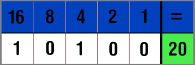

Binair stelsel
Wat is het binair stelsel?
Het binaire stelsel is een telstysteem dat alleen gebruikmaakt van twee cijfers: 0 en 1. Dit stelsel is gebaseerd op het getal 2, in tegenstelling tot ons gebruikelijke decimale stelsel dat is gebaseerd op het getal 10 en de cijfers 0 tot en met 9 gebruikt.
Hoe werkt het binair stelsel?
Computers werken met 2 getallen, nullen en enen. De getallen die worden opgebouwd uit nullen en enen heten binaire getallen. Hier heb ik een paar voorbeelden: 0= 00000000 1= 00000001 2= 00000010 3= 00000011 4= 00000100 5= 00000101 enzovoort Hierboven zijn steeds 8 cijfers gebruikt, maar dat hoeft niet per se. Je kunt alle nullen voor de eerste 1 weglaten.
Waar word het binair stelsel voor gebruikt?
Computers werken intern met het binaire stelsel omdat ze gebruik maken van elektrische signalen die slechts twee toestanden hebben: aan (1) en uit (0). Alle gegevens, inclusief tekst, afbeeldingen, geluid en video's, worden uiteindelijk omgezet in binaire code, zodat de computer ze kan verwerken. Dit maakt het binaire systeem de basis van de werking van vrijwel alle digitale technologie.
 0
0